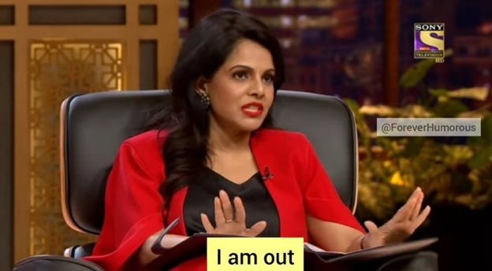

Tanay Pratap Retweeted

There's something magical about Programming Languages, everytime you go back to basics - you find something new and unexplored waiting to be explored. and then "whoa I didn't know that... 😮"Moment
happens ✨
happens ✨
#neogcamp #programming
Simran Gangwani Retweeted

My students when someone ask them to go through DSA heavy rounds.

Simran Gangwani Retweeted

Responsive design is fundamental to Web, than 10 years old now!😮
Important to start thinking about it early in development! 😮
- Fluid layouts
- Media queries
- Responsive images
- Relative units
- Mobile first vs Desktop first
- Logical breakpoints
Important to start thinking about it early in development! 😮
- Fluid layouts
- Media queries
- Responsive images
- Relative units
- Mobile first vs Desktop first
- Logical breakpoints
#RockStarDev 🌟🌟🌟
neogcamp Retweeted
Day 81 of #151daysofcode
- Attended first class of @neogcamp by @tanaypratap -Didn't realised how that four hours passed. Super excited for the next classes🔥🔥
-Made a UI clone of the Netflix landing page using HTML & CSS
- Live link: https://netflix-simran.netlify.app
- Attended first class of @neogcamp by @tanaypratap -Didn't realised how that four hours passed. Super excited for the next classes🔥🔥
-Made a UI clone of the Netflix landing page using HTML & CSS
- Live link: https://netflix-simran.netlify.app
#neogcamp #100DaysOfCode #100daysofcodechallenge #HTML5 #CSS3 #javascript #netflix